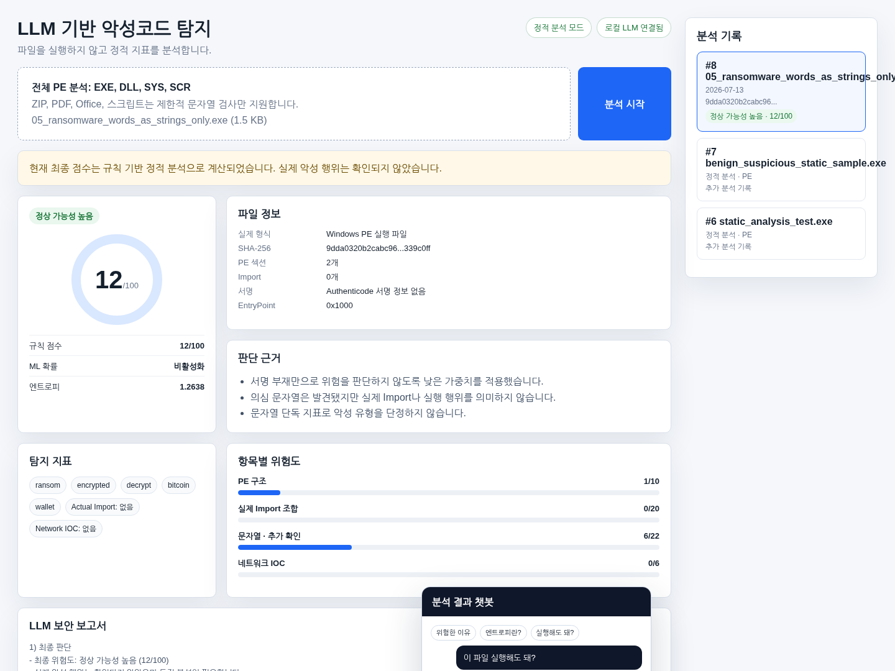

/ Security Project · Local LLM
LLM 기반 악성코드 분석 웹 앱
PE 정적 분석, 규칙 엔진, Random Forest와 로컬 Ollama를 결합해 위험 근거를 설명하는 악성코드 분석 웹 애플리케이션입니다.
Project Stack
01 · Overview
프로젝트 개요
업로드된 EXE, DLL, SYS, SCR 파일을 직접 실행하지 않고 PE 헤더, 섹션 구조, 엔트로피, Import Table, 문자열, URL/IP IOC, Authenticode 정보를 분석합니다. 단일 문자열이나 일반적인 Windows API 하나만으로 악성이라고 단정하지 않고 여러 독립 지표를 함께 평가합니다.
검증된 Random Forest 모델이 있으면 47개 PE 정적 특징으로 악성 확률을 계산해 규칙 점수와 결합합니다. 분석 JSON은 로컬 Ollama에 전달되어 한국어 보안 보고서와 사용자 친화적인 챗봇 답변으로 변환되며, 원본 파일은 LLM에 전달하지 않습니다.
02 · Features
주요 기능
- EXE, DLL, SYS, SCR 파일의 PE 정적 분석
- SHA-256, 엔트로피, 섹션, Import, 문자열, 서명, IOC 추출
- 규칙 기반 위험 점수 0–100 산출
- 47개 정적 특징 기반 Random Forest 악성 확률 결합
- 랜섬웨어·트로이목마·다운로더·인포스틸러 유형 추정
- Ollama 기반 한국어 보고서와 추천 질문·자유 질문 챗봇
- SQLite 분석 이력과 SHA-256 중복 분석 캐시
03 · Architecture
구현 구조
Secure Upload Layer
파일명 정규화, 크기 제한, 임시 파일 삭제와 선택적 API Key를 적용합니다.
Static PE Analyzer
PE 구조, 엔트로피, 실제 Import, 문자열 마커와 네트워크 IOC를 분리해 추출합니다.
Rule & ML Scoring
독립 증거 그룹 기반 규칙 점수와 Random Forest 확률을 가중 결합합니다.
Local LLM & History
분석 JSON만 Ollama에 전달하고 결과와 채팅 내역을 SQLite에 저장합니다.
04 · Build Log
어떤 방식으로 만들었는가
규칙 엔진은 PE 구조, 실제 Import 조합, 문자열·추가 확인, 네트워크 IOC를 서로 다른 증거 그룹으로 계산한 뒤 0–100 범위로 정규화합니다. CreateFile, LoadLibrary, VirtualAlloc 같은 일반 API는 단독으로 높은 점수를 주지 않고, 프로세스 조작·다운로드 실행·지속성처럼 강한 조합이 확인될 때 가중치를 높였습니다.
로컬 LLM에는 원본 파일이 아니라 분석 결과 JSON만 전달합니다. 추천 질문은 결론·이유·권장 조치 구조로 답하고, 사용자가 직접 입력한 질문은 자연스러운 한국어 대화형 답변을 생성하도록 모드를 분리했습니다. 모델 연결에 실패하면 결정적 템플릿으로 대체하여 분석 결과 자체는 계속 제공됩니다.
Screenshot Area

05 · Result
결과 및 배운 점
파일별 위험 점수 0–100, 규칙 점수, 머신러닝 확률, 세부 탐지 근거와 LLM 보고서를 한 화면에 통합했습니다. 자동 테스트 20개를 통과했으며, 문자열에 적힌 API와 실제 Import를 구분하고 문서용 IP를 제외해 단순 키워드 기반 오탐을 줄였습니다. 학습 완료 모델 평가 보고서가 없는 상태에서는 정확도나 탐지율을 임의로 주장하지 않도록 구성했습니다.
06 · Next Step
개선 계획
- 검증된 benign/malware 데이터셋으로 Precision, Recall, F1, FPR 공개
- Windows Sandbox 또는 별도 VM 기반 동적 분석 연동
- 패킹 및 난독화 탐지 특징 강화
- 분석 보고서 내보내기와 사용자별 정책 설정 추가